We define the scale of the 1st regular Dodecahedron to be 1 = p^0.
| 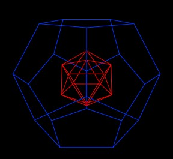 |
| First Dodecahedron with first Icosahedron inside. |
Within the Dodecahedron is an Icosahedron. Its scale is also defined to be 1. It is sized with respect to the Dodecahedron as described in the article on the scaling of the Icosahedron.
We next add a scaled Icosahedron around the regular Dodecahedron.
| 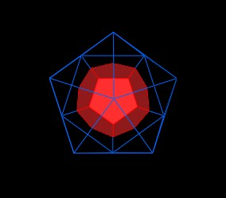 |
|
A scaled Icosahedron around the Dodecahedron. |
The scale of this Icosahedron is such that an additional regular Dodecahedron can be added to a face of the Icosahedron and such that: 1) The added Dodecahedron shares a vertex with the orginal Dodecahderon and 2) 3 other vertices of the added Dodecahedron share 3 vertices of the scaled Icosahedron. (This is a little hard to see....)
| 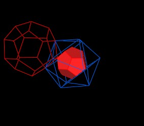 |
|
Scaled Icosahedron with an additional scaled Dodecahedron. |
There are 20 triangular faces to the Icosahedron. Each of the 20 faces could be given a regular Dodecahedron, but it would be very hard to see some details, so I'll only add 4 more Dodecahedron, for a total of 5, clustered around a single Icosahedron vertex.
| 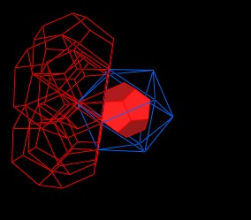 |
| 5 Dodecahedron around 1 Icosahedron vertex. |
Changing color helps a little.
| 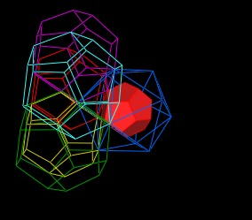 |
| 5 Dodecahedron around 1 Icosahedron vertex. |
| 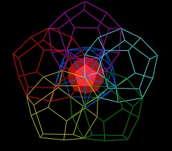 |
| 5 Dodecahedron around 1 Icosahedron vertex. |
These 5 regular Dodecahedra actually define a plane. This plane can be used to define the next scale for a larger Dodecahedron.
| 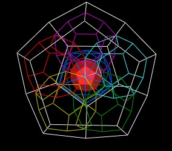 |
| The next scaled regular Dodecahedron. |
| 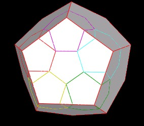 |
| The next scaled regular Dodecahedron. |
Back to the 5 "connection" Dodecahedra, we find that if we display them as solid polyhedra, there appears a dimple in the center.
| 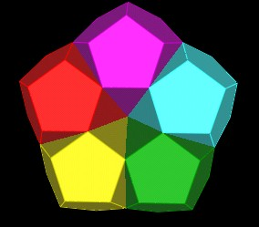 |
| A dimple between the 5 Dodecahedra. |
This dimple has the shape of an Icosahedron.
| 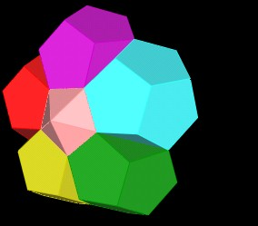 |
| Icosahedron in "dimple". |
This dimple associated Icosahedron makes contact with the Icosahedron around the 1st Dodecahedron.
| 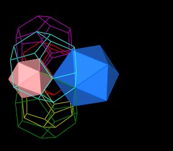 |
|
An Icosahedron in the dimple defined
by the 5 connection Dodecahedra. |
The scaling of these Dodecahedra is as follows:
The "connection" Dodecahedra have a scale factor of p^1, and they connect the 1st Dodecahedron to the next layed (surrounding) Dodecahedron.
The outer surrounding (2nd layer) Dodecahedron has a scale factor of p^3.
The Icosahedron within the 1st Dodecahedron is defined to have a scale factor of 1.
The Icosahedron in the next (Icosahedron) layer out, used to define the "connection" Dodecahedra scale, has a scale factor of p^3.
The small "dimple" Icosahedron has a scale fator of p^2.
Note that the connecting dodecahedra interpenatrate each other. The shape of this interpenatration needs to be explored.
Usage Note: My work is copyrighted. You may use my work but you may not include my work, or parts of it, in any for-profit project without my consent.